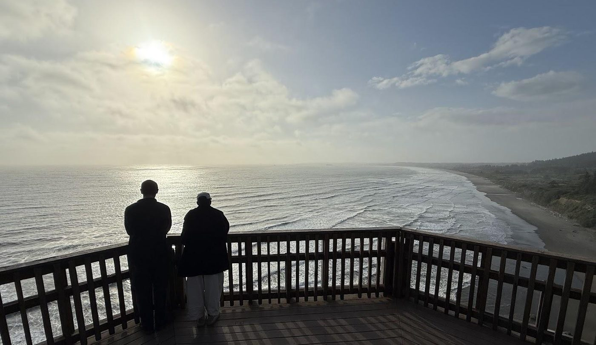
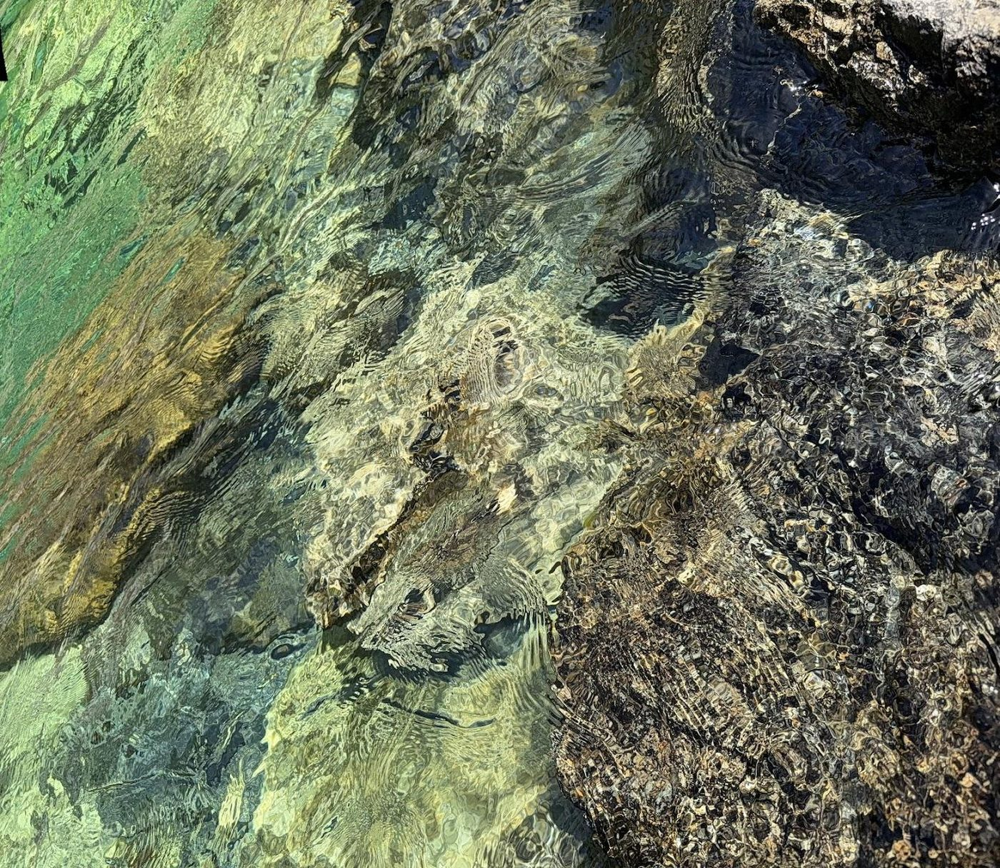
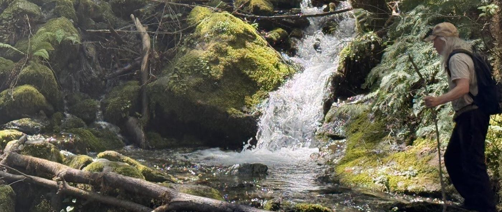
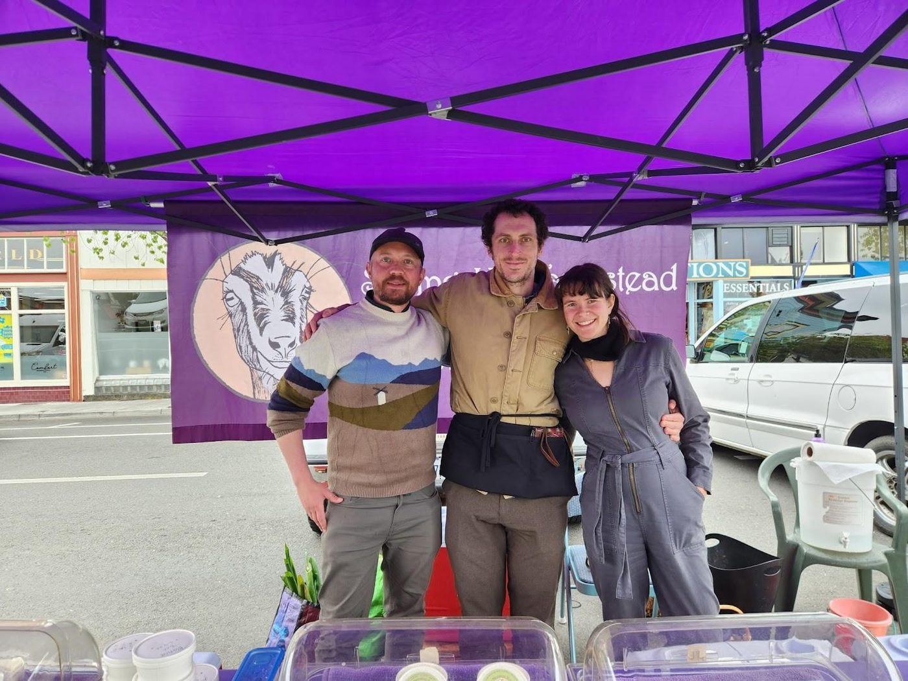
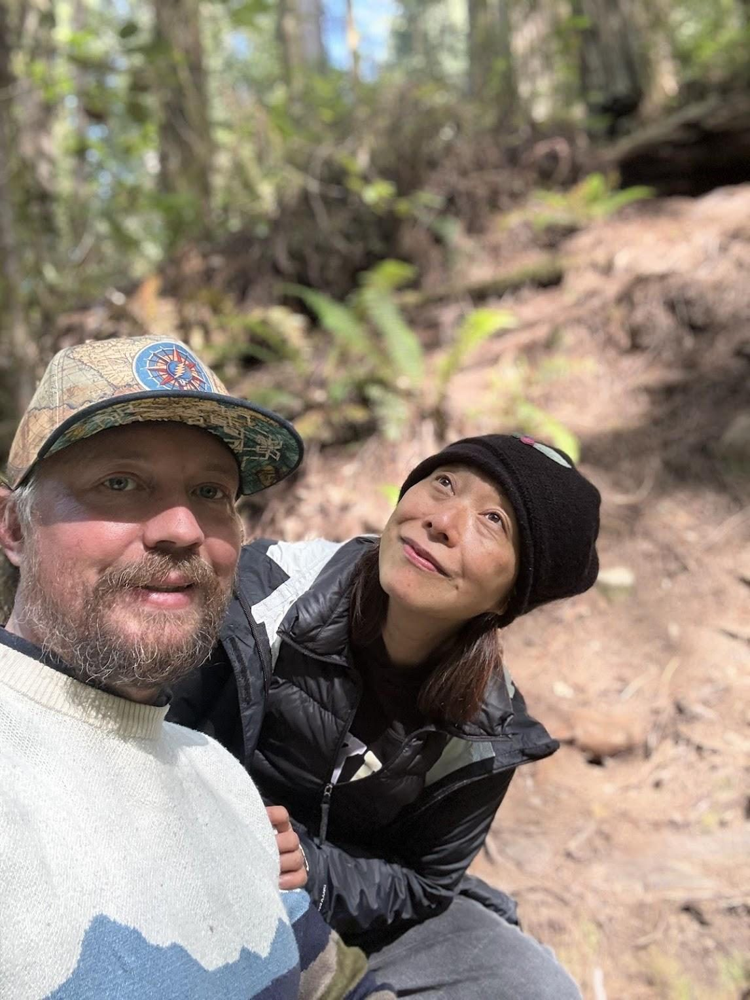
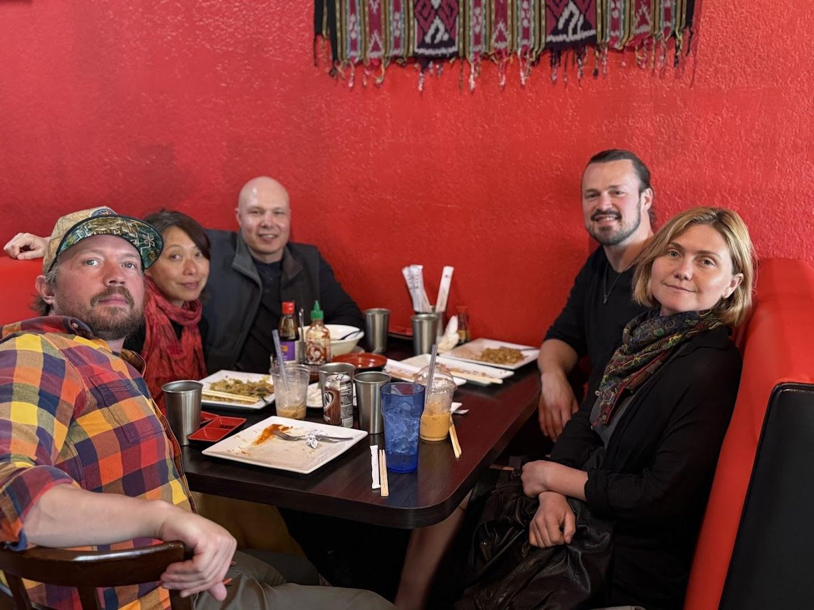

This is the first post in Emergent Stories; writing from the researchers, practitioners, artists, and wanderers who make up the Space Zero community. It seems right that the first should be a personal one; how a child development lecturer from a small town on the Isle of Wight came to spend Spring on the far northern coast of California, and why he came home convinced that places like Space Zero are close to what this moment quietly asks of us.
Endings, Beginnings and Becomings
In January 2026 I joined the Board of Directors of the Active Inference Institute, and around the same time I decided to move on from my role in UK academia. I had been a principal academic in a faculty of humanities and social sciences, teaching child development and play, work I loved, among colleagues I still admire. Universities are under real strain, financially and in harder-to-name ways, and it is no one institution’s fault. It is simply that the questions I most care about now live at an intersection the academy still tends to keep on separate floors: philosophy and physics, ethics and AI, contemplative practice and mathematics.
I did not expect my own path to lead here. My background is children, play, literature, the humanities; most of my published work is about the early years, about the knowledge a good educator needs and how young children come into their own. I was not expecting, in mid-life, to find myself at home among high-level mathematical ideas. It turns out the two worlds have far more to say to each other than either usually admits.
An invitation, and a rupture behind it

In Spring 2026, Daniel Friedman of the Active Inference Institute kindly invited me to California, and I was graciously hosted in Crescent City, the small harbour town where the world’s tallest forest meets the Pacific, and where Space Zero is taking root. I was looking forward to nature, to embodiment, to meeting people “in the flesh” whom I had only known through screens. I arrived carrying something heavy. A year earlier my own life had passed through a sudden ending, and I knew, in the way the body knows before the mind will say it, that I needed ground under my feet more than I needed time in front of a screen. I have spent a career explaining to trainee educators that a child cannot explore from a place they do not feel safe; that the reaching-out and the being-held are not opposites but a single system. I arrived in Crescent City needing to be taught my own lesson back. These words are futile devices for expressing just how grateful I am.
Held
Here is the thing I most want to say, and it is a quiet thing.

Almost as soon as I arrived I was folded into gatherings; spiritual teachers, complexity scientists, AI philosophers, artists, and a great many simply kind and interesting people, new faces arriving from all over the world almost by the day. The folding-in was gentle. Nobody was performing, it was, to put it most simply, a happening. Not the actions of one person, or even many, but the intrinsic fabric they were weaving together while nested in nature. Daniel would often casually say “chill”, and it was not a small word for me. It named the whole atmosphere: yes, we are turning over some of the largest questions there are, and yes, nodes like this one seem to be quietly appearing all over the world right now, but, we are mindful and relaxed, we are in no hurry, we simply carry on. The nervous system reads a room like that. Voices soften. Breathing slows. You stop defending a position long enough to actually hear something outside your own field.
My old discipline has a precise word for what that atmosphere was doing: it was containing, in Winnicott’s sense; a holding secure enough that difficult things could be thought without anyone needing to grip. The science is almost comically literal about the ingredients: a few days among trees measurably lowers the body’s stress load and settles the nervous system (Park et al., 2010; Antonelli et al., 2019). The beautiful redwoods (the tallest in the world!) were doing part of the facilitation for free — thank you trees!
I have come to believe this is not a soft extra alongside the real work. It may be the precondition for it. The people shaping our technological future too often work at speed, in isolation, far from the living world their decisions will touch; and we then wonder why the results feel ungrounded, too fast or uncanny. A mind that is defended and hurried reconstructs the same narrow patterns over and over. A mind that is held can reach further back into everything it has ever experienced, and further out into what it might yet become. That widening is not indulgence, it is where the genuinely new comes from, and the research on creativity says as much: original insight tends to arrive in the unhurried, wandering, well-connected mind, not the clenched one (Beaty et al., 2016; Brown & Paul, 2024).
The mystical is not somewhere else
One day, we sold goat’s cheese at the market.

I keep returning to that experience because it holds the whole experience for me. There is a temptation, when you spend your days near big ideas, the physics of emptiness, the nature of mind, what a self even is, to imagine the profound lives elsewhere, up above the ordinary somewhere, and that the market stall is the interruption. I have come to think this is exactly backwards. Strip away the performing self, the busy egoic skin, and what comes through the aperture of the ordinary is the mythical. The cheese stall was no less real than the seminar on emptiness; it was the same reality, wearing everyday clothes. Jung spent his life on this; the small, finite, managing self and the larger Self it forgets it belongs to. Crescent City re-taught this to me, not as a concept, but as a Wednesday. Sacred and plain are not two places; there is just the one place, met with more or less attention.
That, I think, is the real gift of a place like Space Zero. Not that it removes you to some rarefied height, but that it lets the height and the ground be the same table. Daniel and I talked William Blake between conversations about the free energy principle and the nature of time. Without contraries is no progression, and the season was made of exactly such fertile contraries held together; soil and silicon, meditation and equation, the market and the mind.
What scientists actually need
My historical expertise turned out to be more relevant than expected too. Two decades practising and teaching Piaget, Vygotsky, Froebel, Reggio Emilia, Steiner, and Montessori, with the prepared environment, with attachment, with the child’s entirely serious business of play, spoke directly to what people were reaching for. Reggio calls the environment the child’s “third teacher”, and that we must maintain the ‘hundred languages’. Space Zero agrees that these principles relate to adult scientists too; an experiential workshop of play and shared becoming. We know how to build spaces that let a four-year-old feel safe enough to take a real risk with an idea. Yet, we have been strangely reluctant to build the same thing for the ‘grown-ups’ carrying the future of AI and frontier sciences.
Others are finding the same intuition from other directions. I was soon woven into discussions with like-minded process thinkers and introduced to Bret Victor’s Dynamicland; a research space built so that thinkers work with their whole bodies, hands and objects and each other, rather than hunched alone behind glass, because understanding is deepest when it is built side by side (Victor et al.). Space Zero offers something akin to that, set among redwoods, the Pacific and the USA’s cleanest river. The room and the wild continuous with each other. Play, for a scientist, is not the opposite of rigour. It is how a stuck mind gets unstuck. Give a serious person a genuinely safe, unhurried, embodied place among good company, and the work does not get lazier; it gets braver, more embodied and immediately experienced as a living science.
What comes next

Midway through my stay, I was surprised to hear that a paper of mine had been accepted for the AGI 2026 conference. In plain terms it asks when an adaptive system, a brain, an animal, perhaps one day an AI, should reorganise what it has accumulated, rather than act on what it already holds; a question of timing and rhythm that I suspect matters as much to how humans and machines might live well together as any question of raw power. Perhaps a way for AGI systems ‘out there’ to safely mirror, in an attachment theory sense — even, a way for an AGI system to have a mathematical reason for how change constitutes reality for all finite systems. A companion piece, still unpublished, called “The Boundary is a Rate,” follows the same thread further in. The mathematics is there for anyone who wants it, below. However, the truer version of the idea I learned on the coast is that a self is less a wall than a living edge, remade in every meeting; which is only to say we become who we are through what, and whom, we are held by, and how we choose to attend to each passing moment. Zero exists to make equal space for every ‘one’.
I will be at the conference in San Francisco at the end of July, and I am helping to build Space Zero from here in the UK in the meantime. Everything the spring gave me, the friendships, the grounding, the sense that a new kind of experiential, deeply human institution is genuinely possible, is now part of what I can rebuild from. I am more grateful for that month than I know how to say. If I have had the privilege of getting to know you during my stay in the US, I thank you, as best I can.

One last thing, which I most want this series to carry. One hears, at conferences, about attracting “high-quality people,” and I understand the phrase, given the wonderful embodied minds I have met during my time in Crescent City. I also, however, wonder whether the next insight our future needs could be being held by a child drawing circles in the sand, or by someone whose paradigm is so far from ours that we have not yet learned to listen. A place like Space Zero exists to make that meeting possible; to hold scientist and artist, contemplative and cheesemonger at one table, in one unhurried season, long enough to change each other.
If any of this resonates, you can find out more at space-zero.org, and me at honami.co.uk.